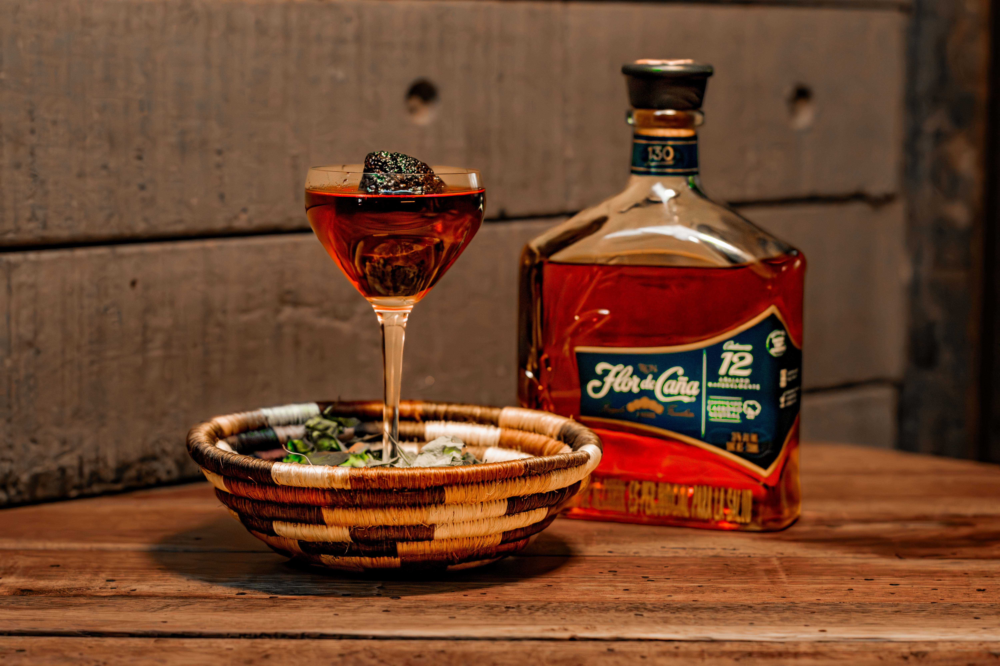

KINTU


Kintu es un ritual andino donde se unen tres hojas de coca para ofrecerlas a la tierra y a los dioses. Simboliza gratitud, y la unión entre lo humano y lo sagrado. Es el acto de compartir, de honrar y de recordar que todo lo que recibimos debe volver en equilibrio.
Mary pick ford
Se atribuye a Eddie Woelke, un bartender estadounidense que trabajaba en el célebre Hotel Nacional de La Habana durante la Prohibición. Inspiración: Fue creado en honor a la actriz canadiense-estadounidense Mary Pickford, una de las grandes estrellas del cine mudo y conocida como “la novia de América”.
Gabriel Quintero